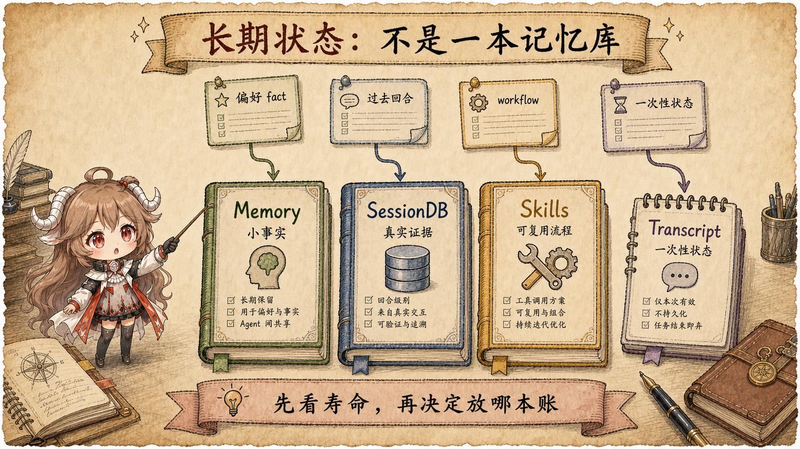

继续第一篇的修复任务。你让 Hermes 修一个失败测试，中途补了一句：“这个仓库里不要直接修改生成文件。” 几天后，它又遇到同一个目录。你真正希望它做的，不只是把这句话原样保存，而是先认出它是什么：这是当前任务的临时限制， 某个仓库的长期规则，还是你在所有项目里的个人偏好？三种答案听起来相近，写错位置后的行为却完全不同。
如果把它写进本轮 transcript，下一轮未必主动看见；写进 USER.md，其他仓库也可能被同一条规则约束；
写进项目的 AGENTS.md，它会跟随仓库，但只适合真正属于这个项目的约定；写成 Skill，则把一句禁止规则误装成了操作流程。
所以“让 agent 记住”之前，必须先回答这条信息适用于哪个范围、能活多久、以后在什么场景下应该出现。
这一篇要解决的问题。 读完后，你应该能拿到任意一条信息，先不用源码名，判断它是规则、偏好、证据、流程还是一次性状态；然后再说明它为什么应该进入 system prompt 的某一层、Memory、SessionDB、Skill，或者只留在 transcript。
这里仍然使用 Hermes Agent 的固定源码快照 fa1a5c0。这个快照很重要，因为最新实现已经调整了 system prompt 的层级：
Skill 索引现在位于更靠后的 volatile 区，而不是稳定前缀。本文以当前源码为准，不沿用旧文章或旧提交里的排列。
一、先别急着选文件：先判断这条信息是做什么的
初学者最容易从文件名开始想：“这是不是应该写进 Memory？”更稳妥的顺序恰好相反。先问四个问题，再选存储位置。
| 先问什么 | “不要改生成文件”的可能答案 | 它决定什么 |
|---|---|---|
| 它在约束谁？ | 只约束这个仓库，或约束用户的所有项目。 | 项目 Context 与用户画像不能互换。 |
| 它要活多久？ | 只到本轮结束，或以后每次进入仓库都成立。 | 一次性 transcript 与长期状态不能互换。 |
| 它是事实、证据还是方法？ | 偏好是一条小事实；失败日志是证据；重新生成文件是一套方法。 | Memory、SessionDB 与 Skill 不能互换。 |
| 下次什么时候需要看见？ | 进入仓库就要遵守，还是遇到同类任务时才按需加载。 | 决定它应常驻 prompt，还是检索后再进入本轮模型输入。 |
这四问建立了一个简单顺序：先确定作用范围，再确定寿命，然后区分事实、证据和方法，最后决定读取时机。 Hermes 源码里的层级和存储位置，都是在实现这个顺序。下面先从模型每轮最先接触的 system prompt 开始。
二、system prompt 不是一个可以随便塞东西的大袋子
调用模型时，最前面需要一段说明告诉它“你是谁、能做什么、当前工作区有哪些规则”。这段说明叫 system prompt。 如果把身份、工具说明、项目文件、用户偏好、当前日期和临时检索结果全部随手拼进去，它当然也能运行；问题是每一轮只要有一小块变化， 前面的字节就可能跟着改变，模型看到的规则来源也越来越难追踪。
Hermes 的
build_system_prompt_parts
先把材料放进三个有顺序的层级，再一次性连接。这里的顺序不是“谁更重要”的排名，而是“谁更可能跨会话保持不变”的排名。
开头的“指令装配台”把这些关系画成了上下两条路：三层材料在工作台上合成会话级 system prompt； turn-only 召回走下方独立通道，只进入本轮模型输入。下面再逐层解释每一块为什么待在那里。
2.1 stable、context、volatile 分别保护什么
stable 位于最前面，放身份、通用工具指导、任务完成规则和较稳定的运行提示。它保护的是可复用前缀：
只要这部分字节不变，上游 provider 就更容易复用已经计算过的 prompt cache。
context 放当前工作区相关的材料，例如 coding workspace snapshot、调用方传入的 system message，以及项目 Context 文件。
它不像身份那样跨所有会话稳定，但在一次项目会话里通常不会每轮变化。把它单列出来，也能看清一条规则究竟来自用户调用方还是仓库文件。
volatile 放“下一次重建时更可能变化”的内容：Skill 索引、MEMORY.md、USER.md、外部 memory provider block、
会话日期与标识。源码把它放在最后，因此即使重建时尾部改变，前面的稳定前缀仍有机会被复用。注意：volatile 不等于每轮刷新。
build_system_prompt
会把完整结果缓存在当前 AIAgent 上，通常一场会话只构建一次，压缩或恢复路径才会重建。
return {
"stable": "\n\n".join(stable_parts),
"context": "\n\n".join(context_parts),
"volatile": "\n\n".join(volatile_parts),
}这也解释了一个看似反常的现象：本轮刚用 memory 工具写入的新偏好已经落盘，但当前会话的 system prompt 不会立刻被改写。 这是有意的快照语义，不是写入失败。长期状态的“磁盘真相”和当前模型正在使用的“会话快照”是两份不同生命周期的数据。
2.2 项目 Context 为什么只能有一个优先来源
项目规则也不能把所有候选文件一起拼上。假设仓库同时存在 HERMES.md、AGENTS.md 和 CLAUDE.md，
三份文件可能对测试命令或生成文件给出冲突要求。Hermes 的
build_context_files_prompt
因此使用“第一个命中者获胜”的优先级：先找 .hermes.md/HERMES.md，再找当前目录的 AGENTS.md，然后是
CLAUDE.md，最后才是 Cursor rules。SOUL.md 是独立的身份来源，不参加这场项目规则竞争。
project_context = (
load_hermes_md(cwd)
or load_agents_md(cwd)
or load_claude_md(cwd)
or load_cursorrules(cwd)
)
这个 or 链保护的是单一权威来源。如果“不要改生成文件”确实是仓库约定，最自然的归宿就是选中的项目 Context 文件；
它会随仓库进入 system prompt，也能由代码评审检查。把同一条规则写进用户 Memory，反而会让无关仓库也受它约束。
2.3 turn-only 为什么不属于第四层 system prompt
修测试时，外部 memory provider 可能临时找回一条相关记录，插件也可能给当前请求补一段上下文。这些材料只服务本轮判断。
Hermes 没有给 system prompt 增加“第四层”，而是由
compose_user_api_content
把它们附到当前 user message 的 API 副本上。
存储里的用户原话仍然是“修复失败测试”；发送给模型的副本可以是“修复失败测试 + 本轮召回”。Hermes 还把实际发送的字节保存为
api_content sidecar，后续重放时使用同一份内容，相关写入在
回合准备尾部。
这样既保住真实 transcript，也避免同一条历史消息在下一轮以另一组临时材料重新渲染。
三、长期状态不是一本记忆库，而是三种不同承诺
现在把视线从“模型这次看到什么”移到“以后怎样找回来”。用户偏好、失败日志和可复用流程都能帮助未来任务， 但它们分别承诺三件不同的事：一个小事实以后仍成立，一段历史确实发生过，一套方法遇到同类任务还能复用。

3.1 Memory：小、稳定、进入下一份会话快照的事实
Hermes 的内置 Memory 不是无限向量库，而是两份有字符预算、可直接审计的文件。MEMORY.md 保存 agent 对环境和项目的短事实，
USER.md 保存用户偏好与沟通方式。默认预算分别只有 2200 和 1375 个字符，说明这里追求的是精炼事实，不是堆积整段对话。
MemoryStore
同时维护 live entries 与 frozen snapshot。会话开始时，磁盘条目经过威胁模式扫描后形成 snapshot；system prompt 读取 snapshot。
本轮 add 或 replace 修改 live entries 并落盘，但不会偷偷改动已经交给模型的 snapshot。
写入的拒绝条件也很明确：空内容、注入或泄露模式、重复条目、字符超限、文件读取失败都会被拒绝；replace 遇到多个不同匹配时不会猜。
这些保护集中在
add 与 replace。
长期事实越小，写入越保守，日后越容易看懂它为什么存在。
3.2 SessionDB：保存发生过什么，不替历史下结论
几天后你问“上次失败的测试命令是什么”，需要的是原始证据，不是一句概括。Hermes 把用户消息、assistant 消息、工具调用与结果保存到 SQLite session DB，
再由 session_search 使用 FTS5 查找。工具内部不再调用模型，所以返回的是数据库中的真实消息窗口，而不是又一次生成的摘要。
discovery 路径先调用 db.search_messages，再按 session lineage 去重，并把命中消息附近的窗口与首尾 bookends 一起返回；见
_discover。
这让读者能够回答“证据在哪一轮、前后发生了什么”，而不只得到一个脱离上下文的关键词片段。
3.3 Skills：保存以后怎样做，而不是过去做过什么
如果这次修复让 agent 学会了“生成文件出错时，先修改 schema，再运行生成器，最后验证 diff”，这已经不再是一条事实，而是一套步骤。
Skills 就是 Hermes 的程序性记忆：system prompt 只放简短索引，模型判断匹配后再用 skill_view 加载完整正文，避免每次都携带所有流程。
最新的
build_skills_system_prompt
有进程内 LRU 与磁盘 snapshot 两层索引缓存；这只是“怎样快速构造 Skill 目录”，不是按 LRU 淘汰 Skill 内容。
Skill 的生命周期与 Curator 会在下一篇解释，这里只要记住：LRU 管的是 prompt 索引缓存，不是知识价值排序。
skill_manage
支持 create、edit、patch、delete 和支持文件操作。成功后会清掉 Skill 索引缓存，让后续 prompt 构建看见新目录；但它不会把当前会话已经缓存的 system prompt
每次写入后都强行重排。当前任务知道自己刚改了什么，未来会话则从新索引重新发现它。
四、把同一句话放进五个位置，行为会怎样改变
现在做一次反事实练习。同样是“不要直接修改生成文件”，位置不同，系统对它作出的承诺也不同。
| 放置位置 | 适用条件 | 下次怎样出现 | 放错的代价 |
|---|---|---|---|
| 项目 Context | 这是仓库级规则，所有贡献者与任务都应遵守。 | 进入该工作区的新会话构建 prompt 时加载。 | 多个规则文件并存可能让权威来源混乱。 |
USER.md |
这是用户跨项目都成立的稳定偏好。 | 下一份用户画像 snapshot 进入 volatile 尾部。 | 仓库局部规则会错误扩散到别的项目。 |
| SessionDB | 需要证明用户何时说过、当时上下文是什么。 | 需要时通过 session_search 检索。 |
如果只存总结，原始措辞和上下文会消失。 |
| Skill | 已经形成“怎样安全重新生成”的可复用步骤。 | 索引匹配后按需加载完整流程。 | 一句偏好会被误写成笨重、难触发的流程。 |
| Transcript only | 它只约束当前任务，结束后不应持续生效。 | 留作恢复与审计，不主动常驻未来 prompt。 | 过早持久化会把临时要求硬化成长期规则。 |

五、一次完整判断：从用户原话走到正确保存位置
把前面的规则压缩成一次可复述的判断。用户在修复任务中说“这次不要改生成文件”，首先把原话保存进 transcript，保证任务中断也能恢复。 runtime 把它放进本轮模型输入，前台据此改 schema 并运行生成器。交付后，系统不应该因为出现了“以后”两个字就自动写 Memory。
接下来才检查范围：如果仓库已经把同一约束写进权威 Context 文件，无需复制；如果用户明确说这是所有项目的稳定偏好，可以提炼成一条短
USER.md 事实；如果真正可复用的是生成与验证步骤，应更新对应 Skill；如果都不是，就只保留历史。SessionDB 已经承担了“以后还能找到原话”的职责，
所以“不写长期状态”不等于“彻底忘记”。
先保存原话，完成当前任务；
再问它属于哪个范围；
事实进 Memory，证据留 SessionDB，方法进 Skill；
没有长期价值，就只留在 transcript。
这段判断不是 Hermes 源码里的单个 if 函数，而是本文根据每个组件能观察到的读写行为整理出的阅读方法。
它的价值在于把“记不记”拆成两个问题：真实历史一定要保存；是否再提炼成长期状态，则需要更严格的写入条件。
六、结论：状态设计的核心是下一次何时可见
到这里，几个容易突兀的名词已经连成一条路线。system prompt 决定会话开始时模型带着哪些指令；项目 Context 提供仓库权威规则； Memory 提供短小稳定事实；SessionDB 保存可检索的真实证据；Skills 保存按需加载的流程；turn-only 材料只进入本轮 user message 副本。
它们的区别不只是文件格式，而是不同承诺：谁能写、什么时候读、当前会话会不会立即看见、失败时哪份数据仍然可信。 以后再遇到“这个要不要记住”，最有用的问题不是“写进哪块 memory”，而是下一次在什么场景下，谁应该让模型看见它。
不过，知道经验应该落进哪本账，还没有解释它怎样从一次已经完成的任务里被提炼出来。 下一篇会从 finalizer 开始，按 background review、nudge 与 Curator 的调用顺序追踪交付后学习， 并回答为什么这些步骤不能抢在用户答案之前运行。